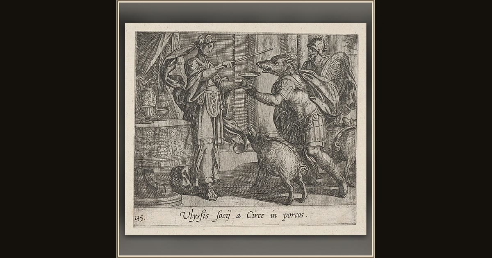

Circe Turns the Crew into Swine
Antonio Tempesta · 1606 · The Metropolitan Museum of Art · New York, USA
Antonio Tempesta shows Circe changing Odysseus’s companions into swine, the shock that sends Eurylochus running back to the ship. Explore its place in Book X of the Odyssey.